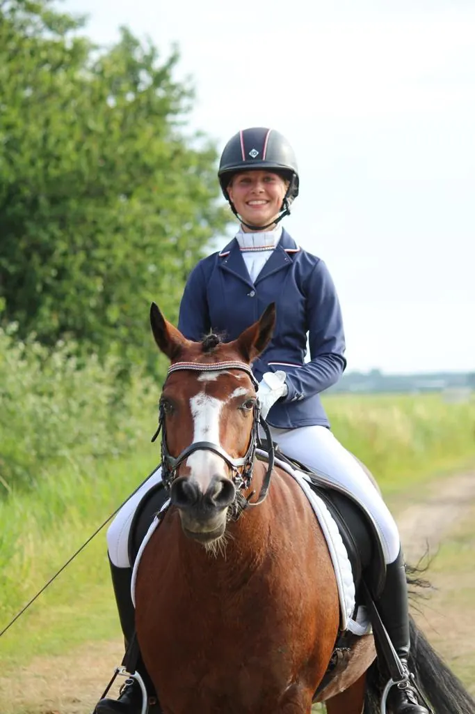
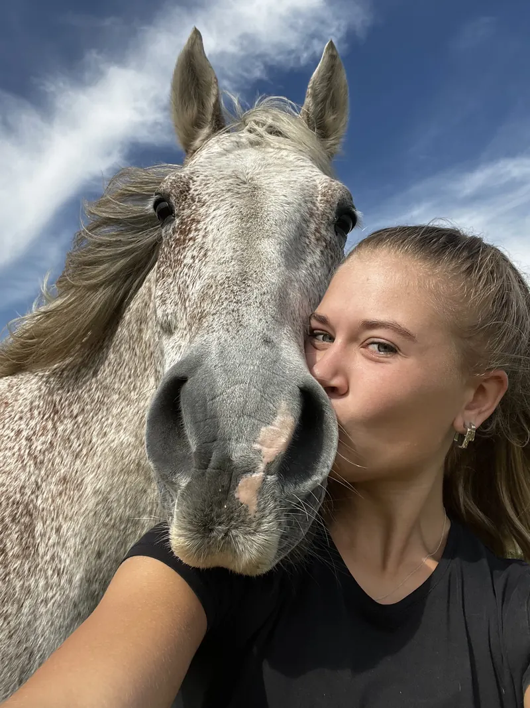

Over mij

Het gezicht achter 4Feet2Move
Mijn naam is Tyra van Beek en paarden zijn al van jongs af aan een belangrijk onderdeel van mijn leven.
Mijn paardenverhaal begon eigenlijk al toen ik drie jaar oud was. Ik spaarde voor mijn eigen 'Pippi-paard' en dat werd uiteindelijk een behoorlijk eigenwijze Shetlander. Om te leren rijden, begon ik met lessen op de manege. Later kwam Funny, de Shetlandmerrie, op mijn pad. Een paardje met wie ik ontzettend veel plezier heb gehad, maar ook de nodige uitdagingen. Door haar spectaculaire bokken stond ze bekend als 'Rodeo Funny'. Het was een tijd van veel lachen, vallen, opstaan en vooral heel veel leren.
Toen ik negen jaar was, kwam Passoa in mijn leven. Een vurige Welsh Cob C-merrie waarmee ik ontzettend veel heb mogen beleven. Van bos-, duin- en strandritten tot crossen, springen tot 1.20 meter en dressuur tot en met Z1. Daarnaast maakte ik kennis met verschillende vormen van grondwerk, zoals loswerken, longeren, werken aan de hand, dubbele lijnen en lange lijnen.
Passoa was voor mij een once-in-a-lifetime pony. Helaas moest ik afscheid van haar nemen door ernstige hoefbevangenheid.
Momenteel is La Fendi mijn paard. Ik kocht haar als jaarling en inmiddels zijn we al tien jaar samen.
Een gevoelige merrie met een sterke eigen mening.
Ik heb haar vanaf de grond zelf opgeleid en beleerd. Tijdens haar verdere opleiding heeft ze helaas een ingrijpende en negatieve ervaring opgedaan, waardoor haar vertrouwen en gevoel van veiligheid ernstig werden aangetast. Ze werd onvoorspelbaar, raakte snel getriggerd en vond het moeilijk om mensen in haar buurt te hebben, zeker wanneer het om aanraking ging. Het werd een intensief proces waarin we stap voor stap opnieuw moesten beginnen. Na een periode van herstel zijn we langzaam de training weer gaan opbouwen. Dat proces heeft mij veel geleerd over geduld, vertrouwen, grenzen en het belang van kijken naar wat een paard écht nodig heeft. Door Fendi ben ik écht gaan leren kijken naar het paard achter het gedrag. Inmiddels kunnen we, wanneer Fendi haar ontspanning vindt weer op Z2 niveau trainen in de rijbaan en is 'duinenstruinen' één van onze favoriete bezigheden!
Mijn opleiding en ontwikkeling

Naast mijn eigen praktijkervaring vind ik het belangrijk om mezelf te blijven ontwikkelen en mijn kennis te verdiepen.
Ik heb de opleiding bij Monya Spijkhoven van Hippische Professionals gevolgd en succesvol afgerond. Hiermee heb ik een professionele basis gelegd voor mijn werkzaamheden als trainer en kan ik mij hiervoor verzekeren.
Daarnaast heb ik veel kennis en inspiratie opgedaan vanuit de trainingsfilosofie van Bent Branderup. De academische dressuur en het gymnastiserend werken met paarden hebben mijn kijk op training verder gevormd. Voor mij draait het niet alleen om het aanleren van oefeningen, maar vooral om het ontwikkelen van een paard dat zijn lichaam op een gezonde en evenwichtige manier leert gebruiken.
Ook heb ik mij verdiept in de Freestyle-methode van Emiel Voest, onder andere op het gebied van loswerken en de basis van het werken met dubbele lijnen.
Door de jaren heen heb ik bovendien veel verschillende paarden mogen trainen en deze ervaringen hebben bijgedragen aan hoe ik tegenwoordig naar paarden en hun training kijk.
Ik heb ervaren dat geen paard hetzelfde is en dat gedrag niet zomaar ontstaat. Achter ieder paard zit een eigen karakter, geschiedenis en manier van leren. Wat voor het ene paard werkt, hoeft voor het andere helemaal niet passend te zijn. Daarom vind ik het belangrijk om verder te kijken dan alleen de oefening of het gewenste resultaat. Ik wil begrijpen wat een paard nodig heeft om zich zowel lichamelijk als mentaal te kunnen ontwikkelen. Met 4Feet2Move wil ik mijn kennis, ervaring en passie delen. Door middel van persoonlijke training, zowel vanaf de grond als onder het zadel, help ik eigenaren om samen met hun paard verder te groeien. Niet vanuit haast of vaste methodes, maar met geduld, vertrouwen en oog voor de combinatie. In sommige gevallen verwijs ik door naar deskundigen als dat de training en welzijn bevorderd.